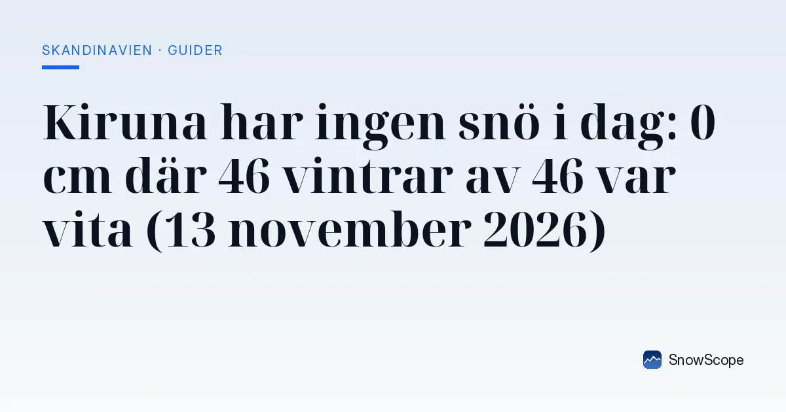

Kiruna har ingen snö i dag: 0 cm där 46 vintrar av 46 var vita (13 november 2026)
Kiruna, beläget på 519 m i svenska Lappland, har varit snöfritt fram till mitten av november trots att det ligger i en av Europas säkraste snözoner. Värstationen i staden registrerade ingenting på fredag, och hela veckan har inte gett något snötillskott. Det är första gången på minst 46 år som marken här har varit bar på denna dag.
Se snöprognosen för Kiruna live i SnowScope-appenSnödjup, pudervarningar och 3D-kartan, gratis.
Ett bruten mönster på 46 år
Sedan mätningarna började för 46 år sedan har det legat snö på marken i Kiruna den 13 november varje enda vinter. Typiskt djup för detta datum är 23 cm. I magra år kunde skidåkare räkna med 14 cm, i rikligare år 35 cm eller mer. Långtidsserien visar att i hälften av alla vintrar hade snön redan lagt sig den 2 oktober—mer än en månad sedan.
Den senaste utvecklingen berättar hur ovanlig idag är. Vintern 2021–22 kom in med 45 cm till denna dag. Förra året gav 24 cm. År innan det 40 cm. Till och med den tunna säsongen 2024–25 hade 7 cm här i mitten av november. Denna bara mark är en första.

Snö finns, men mil bort
Den närmaste vita marken ligger på bergen nordväst mot gränsen. Katterjåkk, på 514 m nära Riksgränsen på norska sidan, ligger under 9 cm snö. Abisko, 80 km längre ut, har 2 cm. Mönstret över hela svenska Lappland norr om polarcirkeln är slående: bara 5 av 22 mätstationer norr om denna latitud registrerade någon snö den 13:e.
Kalluften är på plats. Natttemperaturer har sjunkit till omkring −9 °C. Det som saknas är fukt. Nederbörden som föll denna vecka drog söderut istället, vilket lämnade Kiruna och Tornedalens lägre områden i en torr ficka. Det väderssystem som gav snö till centrala Sverige och kusten nära Umeå passerade förbi.
Vad helgen ger
Lördag blir klar och besk, med temperaturer omkring −14 °C. Söndag blir aktiv, med första snöfallet i veckan troligt, det ger 1 till 2 cm. Måndag tillför en ny möjlighet: vissa prognoser visar upp till 3 cm, andra närmare 1 cm. Det kommer att vitliva landskapet men hamnar långt under en brukbar snowbase.
Jämför detta med det mediandjup Kiruna brukar bära den 1 december (40 cm) och mitten på december (49 cm). Att bygga upp från noll till ens en tunn grund krävs flera system till som denna. Bergen mot Riksgränsen fylls först; staden och dalbottnen förblir marginella i veckor om inte förhållandena förändras.
Vad detta betyder för vinteraktiviteter
Planer för tidig säsong baserade på själva Kiruna stad behöver omtänkas. Snöskoterturner, hundspanntäkturer och marknära aktiviteter kräver sammanhängande täcke, inte spridda fläckar. Skidorter och fjällstugor i högt terräng—särskilt över gränsen eller på högre höjder—bygger upp snö snabbare än låglandet.
Praktiskt sett utgör den bara frusna marken sin egen fara. Sjöar och vattenpölar fryser utan snötäcke på toppen, vilket skapar svart is på stigar och vägar. Denna helgs kyla gör den risken akut. Bilister och fotgängare bör räkna med halt underlag trots bristen på synlig snö.
Det större sammanhanget: sen start på säsongen
En bar mitten av november är inte ett tecken på att vintern misslyckas—Kirunas tidigare vintrar har återhämtat sig från långsamma starter—men det signalerar en försenad säsongsinträde. Vissa vintrar i det senaste resultaten (2024–25 framför allt) kom in med mjuk snö tidigt men tunnade ut i januari. Andra, som 2021–22, höpade upp snabbt och blev djup. Trenden denna vecka antyder en långsam uppbyggnad snarare än ett höstöverflöd.
Nyckeldatumet att bevaka är början på december. Om Kiruna når 25–30 cm då, är en normal vinter möjlig. Om staven stannar här genom sent november bör besökare planera för en fläckig tidig säsong eller sikta på bergen och högre höjder där snö tenderar att fästa tidigare och hålla längre.
Tips för skidåkare
- Om din resa till Kiruna är bokad för november, kontakta din turoperatör nu. Marknära aktiviteter (hundspann, snöskoter, promenader) behöver sammanhängande snötäcke; fråga vad som kan genomföras på bar eller frusen mark.
- Dra till högfjällen nära Riksgränsen snarare än själva Kiruna stad. På 514 m har Katterjåkk redan 9 cm, och högre sluttningar ackumulerar snö snabbare.
- Passa upp för black ice-risken denna helgen. Frusen mark utan snötäcke skapar osynliga faror på stigar, vägar och ytor. Kör och gå försiktigt i −14 °C-kylan.
- Följ snökartorna in i början av december. Om Kiruna når 25–30 cm den 1 december ligger säsongen på rätt spår. Gör det inte, planera för ett tunt tidigt avsnitt.
- Packa lager och vattentät utrustning. Prognosen inkluderar lätt snöfall söndag och måndag; fukt och kyla tillsammans kan göra förhållandena fuktiga och krävande även när djupen är ytliga.
Om siffrorna
Snödjupen för skidorterna är det djupaste snötäcket på ortens övre backar på det angivna datumet; de är uppskattningar för ett område, inte en mätning på en punkt. Prognoser kan ändras. Läs alltid den officiella lavinprognosen innan du åker offpist.
Citera den här rapporten
För forskning, undervisning eller press: siffrorna och diagrammen får återanvändas fritt under CC BY 4.0 med den här källhänvisningen.
SnowScope (2026), Kiruna har ingen snö i dag: 0 cm där 46 vintrar av 46 var vita (13 november 2026), https://snowscope.app/blog/sv/2026/11/kiruna-snow-depth-13-november-2026.html, hämtad 2026-11-13
SnowScope (Atlas Labs). (2026, November 13). Kiruna har ingen snö i dag: 0 cm där 46 vintrar av 46 var vita (13 november 2026). SnowScope snow reports. https://snowscope.app/blog/sv/2026/11/kiruna-snow-depth-13-november-2026.html
BibTeX
@misc{snowscope2026kirunasnowdepth13novembe,
author = {{SnowScope (Atlas Labs)}},
title = {Kiruna har ingen snö i dag: 0 cm där 46 vintrar av 46 var vita (13 november 2026)},
year = {2026},
month = nov,
howpublished = {\url{https://snowscope.app/blog/sv/2026/11/kiruna-snow-depth-13-november-2026.html}},
note = {Published 2026-11-13 19:29 UTC; accessed 2026-11-13}
}· CC BY 4.0 · Metoder, data och verktyg →
Följ Kiruna
Gratis: ett meddelande när nysnö är på väg, och prognosen varje morgon.